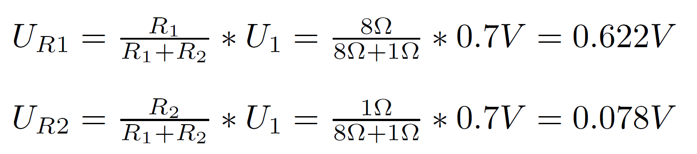

Ķēdes aprēķins
Apēķiniet spriegumus uz rezistoriem 1.attēlā dotajā shēmā.
Sprieguma avota V1 sprieguma vērtību U (Voltos) izvēlieties daļskaitli, kas būtu Jūsu apliecības pēdējie trīs cipari dalīti ar 10.
Piemēram. ‘161REB070’ nozīmē V1 = 0.70 (Volti), R1 ir apliecības pēdējo 3 ciparu otrais numurs+1, R2 ir apliecības numura pēdējais cipars +1.
Piemēram, ja Jūsu apliecības numurs ir ‘161REB070’ tad ‘R1=8Ω’, ‘R2=1Ω’.
Mans apliecības numurs:
161REB070
V1 = 0.70 V
R1 = 7 + 1 = 8Ω
R2 = 0 + 1 = 1Ω

| R1 |
8 Ω |
| R2 |
1 Ω |
| V1 |
0.70 V |
| UR1 |
0.622 V |
| UR2 |
0.078 V |
3. Praktiskā daļa >>
<< Atpakaļ uz sākumu